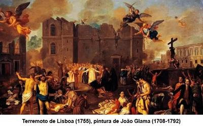

El 1 de noviembre de 1755, Lisboa —capital de Portugal— fue sacudida por uno de los terremotos más devastadores de la historia. Con una magnitud estimada entre 8,5 y 9 en la escala de Richter, el desastre dejó entre 50.000 y 100.000 fallecidos, destruyendo gran parte de la ciudad y generando un tsunami que arrasó las costas del Atlántico. Pero más allá de la tragedia humana y material, este evento tuvo un impacto filosófico y teológico profundo, desmoronando la idea de un dios benévolo y justo.


El terremoto ocurrió precisamente en el «Día de Todos los Santos», cuando muchas iglesias estaban repletas de fieles. Y paradójicamente, mientras las iglesias se derrumbaban sobre los devotos, los barrios de la ciudad donde habitaban comerciantes y librepensadores sufrieron menos daños. Pero en lugar de admitir la futilidad de sus explicaciones teológicas, la Iglesia Católica reaccionó con su habitual irracionalidad: organizó «autos de fe», en los que se torturó y ejecutó a supuestos herejes para «aplacar la ira de Dios». Y como siempre, los clérigos ofrecieron la explicación más absurda posible: la culpa no era de un dios cruel e indiferente, sino del pecado humano.
Sin embargo, el sismo fue un golpe mortal para la doctrina del optimismo teológico promovida por filósofos como Leibniz, quien afirmaba que vivimos en «el mejor de los mundos posibles». Voltaire, en su sátira «Cándido», ridiculizó esta idea, mostrando la brutal indiferencia de la naturaleza y la incapacidad de la religión para ofrecer respuestas racionales. La destrucción de una ciudad cristiana durante una festividad religiosa, ponía en entredicho la noción de un dios justo y protector. Si un ser todopoderoso permitió tal tragedia, sólo cabían dos opciones: o no es benevolente o no existe.
Pero frente a la ceguera religiosa, el Marqués de Pombal, primer ministro de Portugal, adoptó un enfoque racional. En lugar de rezos y sacrificios, implementó una reconstrucción basada en métodos científicos. Se enviaron cuestionarios para estudiar el sismo, se diseñaron edificaciones más resistentes, y se impulsó el desarrollo de la sismología. Fue sin duda un punto de inflexión: mientras la Iglesia miraba hacia el cielo en busca de explicaciones, los racionalistas miraban hacia la tierra.
Al final el terremoto de Lisboa dejó una lección ineludible: el universo no es moral, no responde a plegarias ni castiga pecadores. Simplemente sigue sus leyes naturales, sin importar cuántos templos se levanten en su honor. Y cada vez que la humanidad se aferra a la religión para explicar el mundo, la realidad la sacude con la fuerza de un terremoto, recordándonos que la única respuesta sensata es el pensamiento crítico y el conocimiento científico.
[Godless Freeman]
[Crédito de imagen: Getty Images]
Comentarios
Comments powered by Disqus